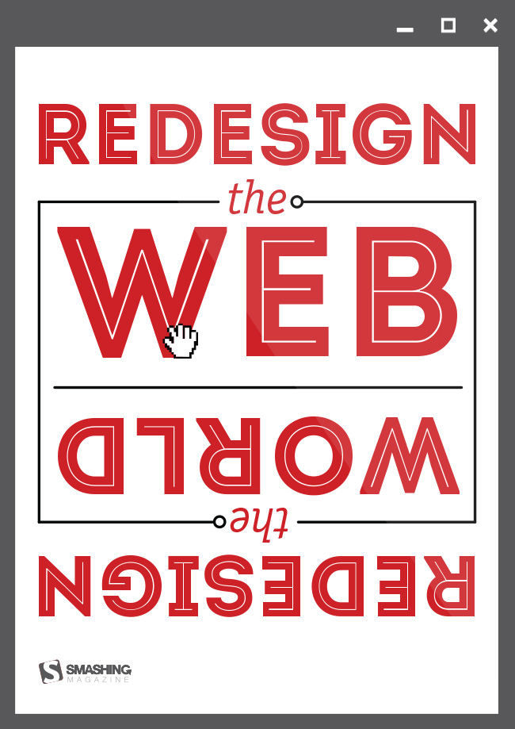

Redesign the Web Poster
A poster I created for Smashing Magazine's "Redeisgn the Web" Poster Design Contest. The poster was featured on their site. The goal of the poster was to raise awareness about the beautiful and accessible web.
My Involvement
Layout, Visual Design
